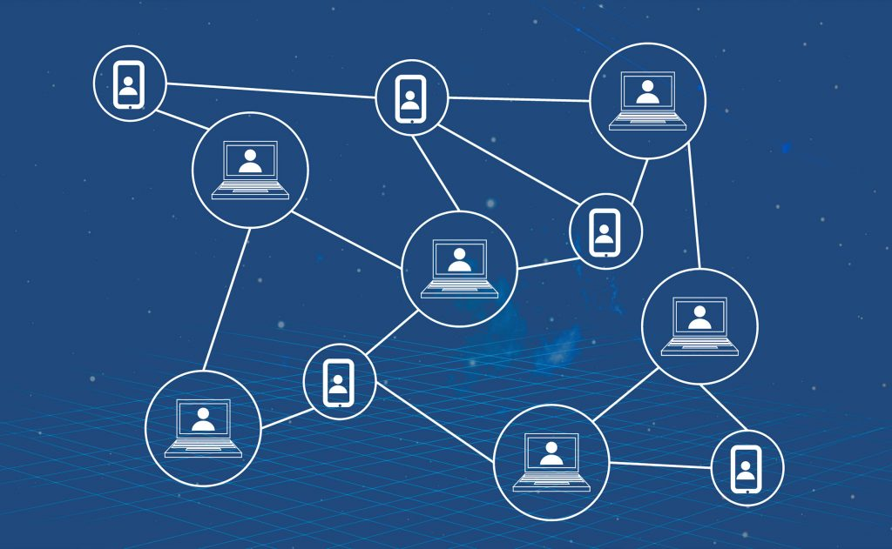
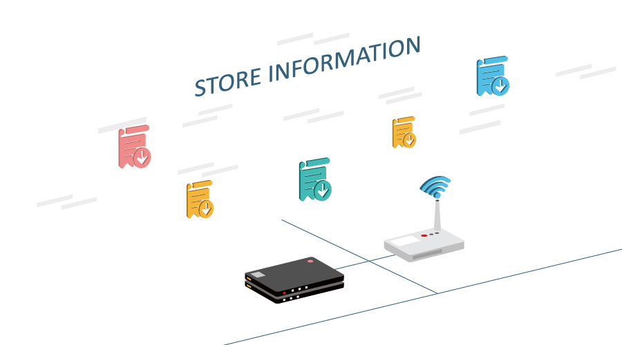

Select information
-
 2018/09/30
2018/09/30NO.1 生态建设 1、与01002 丰瑞祥推进区块链项目合作事宜,将WeShare链区块链技术服务功能清单提供给其客户,并由双方商务进行对接...
-
 2018/09/29
2018/09/29WeShare链发起人仁兄受邀参加全球第一步链改蓝皮书发布会，并签订了中国区块链技术改革联盟行动倡议书
Hot recommendation
-
 2018/08/23
2018/08/23据新华社北京8月21日电 记者近日从商务部国际贸易经济合作研究院获悉，我国将加快区块链技术在商务领域的应用，为发展数字商...
想靠区块链上位的，似乎只能自我欺骗了
今天这篇文章已经酝酿许久，从关注区块链开始从不了解到逐步了解认知后，这个观点越来越强烈。今天通过事实阐述一下实况与观点，区块链是一门技术，技术是一种工具，工具具有其独特的使用方法，解决问题的唯一或者单方面的功能，而非全部。。。。。。
区块链是继互联网之后又一次技术变革和迭代， 从天使投资人徐小平先生呼吁“ALL in 区块链”到BATJ等等互联网巨头布局区块链研发，再到当代知识分子高晓松先生在其综艺节目晓松奇谈中特意用一期的节目时间来讲述区块链的初期、区块链的应用以及区块链的未来等等。现况下，区块链的受关注程度和火热程度，不亚于当年互联网的初期爆发。但是反观历史比较参考，火山喷发时随之而来的裙带效应是漫天弥漫的火山灰和有害物质（这就对了，事物在发展初期一定是爆发式野蛮生长）。
相信夜深人静的时候，每个正在关注或者已经在做区块链的人都会冷静思考，通常会有这几个疑问，区块链到底是什么？价值何在？能够带来什么样的技术变革？当然肯定会有这样的肯定，肯定不仅于目前的”币“、“链”局面，否则不符合事物、科学、商业、社会的发展规律。

先来理解一下区块链技术，区块链技术是在物理空间、时间和数字空间交换价值时，由于物理空间的信息或价值，需要通过人或者智能硬件装备将其转化到数字空间，通过数字与时间、空间进行交互、匹配产生共识，从而确认事物（产品）价值。
那么问题来了，在信息、数据和价值的交换过程中，由于人性的弱点导致对抗外界突发状况以及各种诱惑时，极有可能发生畸变，影响价值交换的可靠性。

举例说明：XXX品牌的柑橘品质很好、口感好， 那如何证实柑橘的各种好，达成生产商营销的意愿，到市场上市场卖个高价格，促进各方利益的实现呢？于是乎有人就给生产商推销基于区块链的溯源防伪系统，说是“把柑橘放到区块链上”，就可以溯源防伪了。
目前的手段是人为的将本来没有任何关系的二维码和柑橘关联对应，通过把柑橘种植、生产、加工、储运、销售过程中部分环节的数据上载到区块链系统中就起到了真实溯源的目的，体现区块链真实可靠不可篡改的价值。
认为这就是溯源了，很真实很可靠，说明基本都是不懂农业，没有认真研究区块链技术。区块链能解决一个空间，特别是数字空间的溯源防伪问题。但是，如果一个系统号称能解决不同空间间的价值交换这个是绝对不可能的事情。区块链能够做到的是只能验证这个二维码是真实的以及上链的数据信息不会修改变动，仅此而已。其它的一概不能证明，又怎么能证明XXX品牌的柑橘是品质是好的，符合检验检测标准的，有利于人体健康的呢？
所以，想靠区块链上位的，似乎只能自我欺骗了。。。。。。
WeShare链想表达的观点是，区块链作为技术实现一种介质的角色，同时搭建一个产品溯源的生态，联合生产商、农业智能硬件服务方、农资商、植保技术部门、检验检测部门以及流通渠道；实现将农产品从种植到销售全过程数据真实、信息准确、官方监管核准的结果上载到区块链系统，同时附加标记的Token绑定在对应的柑橘“溯源身份证”地址上；如果柑橘被消耗了或者过期了，对应的Token也会被消耗掉。
以上产品逻辑、价值交换定律和共识合作，才能够实现农产品真正的溯源，同时也很好的解释了区块链去中心化的分布式和记账方式和商业格局。